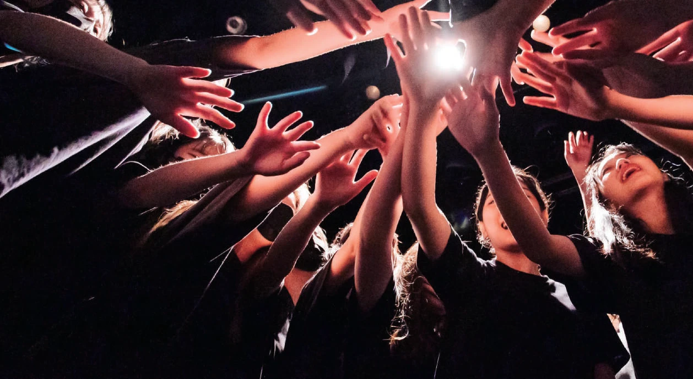
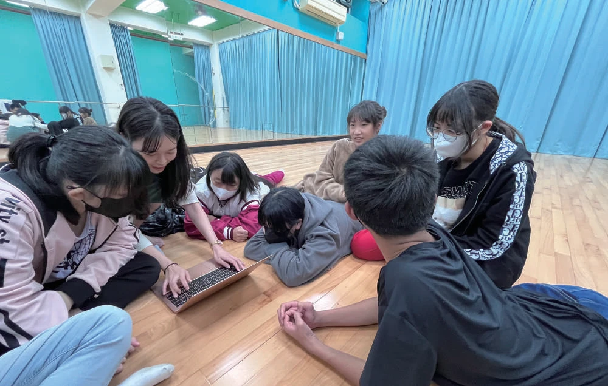
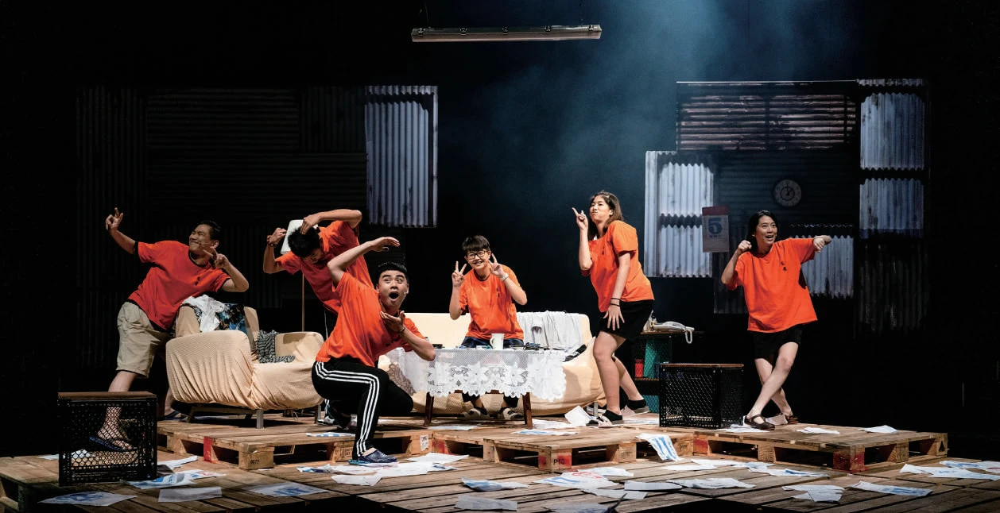

8所
中介學校慈輝班
2024 年計畫服務涵蓋校數
THE KITE PROJECT 藝術 × 教育 × 陪伴
每一個孩子，都值得被好好接住。
我們走進中介學校，以持續的戲劇陪伴，
讓少年在被理解的關係裡，找到自己的力量。

讓每一次伸手，
都有被回應的可能。
01 / WHY WE ARE HERE
關於牽風箏的人有些少年，在成長的路上，
需要多一份理解，也多一個重新出發的機會。
家庭變故、經濟困難或身心與適應議題，可能讓孩子的就學之路變得不穩定。「牽風箏的人」走進中介教育場域，以戲劇教育陪伴特殊境遇青少年，讓藝術成為生活裡可以親近的支持。
我們相信，穩定的關係能讓改變慢慢發生。透過固定入校的戲劇教師，孩子在遊戲、角色扮演與共同創作中，認識情緒、表達想法，也學著理解他人。
在這裡，少年可以先安心做自己。

陪伴，發生在每一次相聚裡。02 / HOW WE WALK TOGETHER
在角色與故事裡辨識情緒，找到表達感受的方式，讓心裡的聲音有機會被聽見。
從聆聽、合作到換位思考，在互動中看見不同觀點，建立與他人的連結。
透過創作與展演承擔角色、共同解決問題，累積「我也做得到」的經驗。
03 / SMALL STEPS, REAL CHANGE
陪伴的力量讓專業走進校園，讓支持持續發生。
一次次相聚，累積成陪伴少年的足跡。
8所
2024 年計畫服務涵蓋校數
114位
2023 年服務人數
286小時
2023 年約 143 堂課的累積
50次
2023 年支持教學品質的行動

“很喜歡大家從不敢上前表演到今天樂在其中，而且真的很開心，很有趣！
04 / GROWING TOGETHER
牽風箏的人 2.02025 年，青藝盟與衛武營國家藝術文化中心攜手，推動「教學藝術家專業發展計畫 × 牽風箏的人 2.0」。結合劇場、教育與青少年工作專業，培育能回應現場需求的教學藝術家。
從戲劇應用、社會情緒學習（SEL），到班級經營、青少年發展與實務交流，把專業的根扎深，讓陪伴走得更遠。
「風箏計畫」以戲劇陪伴中介學校的少年。
啟動教師培育，串連企業支持，讓穩定的戲劇課程走進更多校園。
與衛武營合作培訓，結合課程、入校見習與考核，累積教學實踐的力量。
05 / BE PART OF THE JOURNEY
你也可以，成為牽風箏的人。
你的支持，是教師走進校園的下一段路，
是一堂穩定發生的戲劇課，也是少年被看見的機會。
捐款將前往青藝盟官方支持頁；若希望指定支持本計畫，歡迎先與青藝盟聯繫。